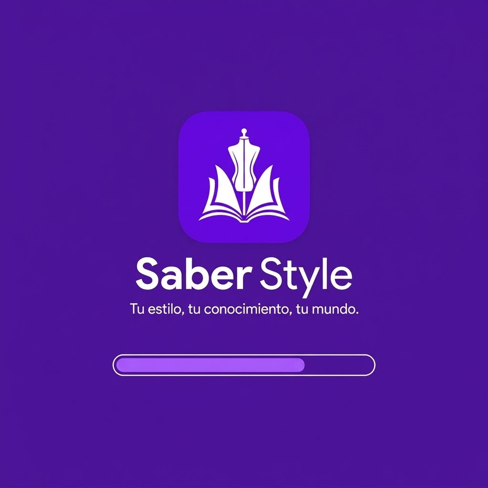
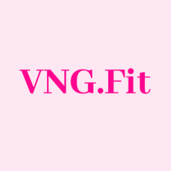
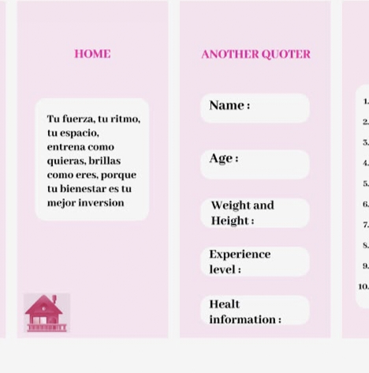

Mis Expereciencias
Aico co
Aico es una empresa especializada en la creacion de plataformas educati Mi funcion en la empres es ser investigadora y programadora, mi primer proyecto lo encontramos en la aplicacion "sabee style" un aplicacion imteravtiva y educativa, com juegos, quizzes. Los principales aportes los encuentras en el desarrollo de varias partes de la aplicacion


VNG.fit
VNG.FIT fue un proyecto realizado durante el 2025; esta aplicacion buscaba ayudar principalmente a las mujeres en la creacion de rutinas, dar tips de gym, de dietas y otros tips de salud. Aunaque este proyecto no se hizo realidad, participe como diseñadora de la aplicacion casi en suu mayoria

